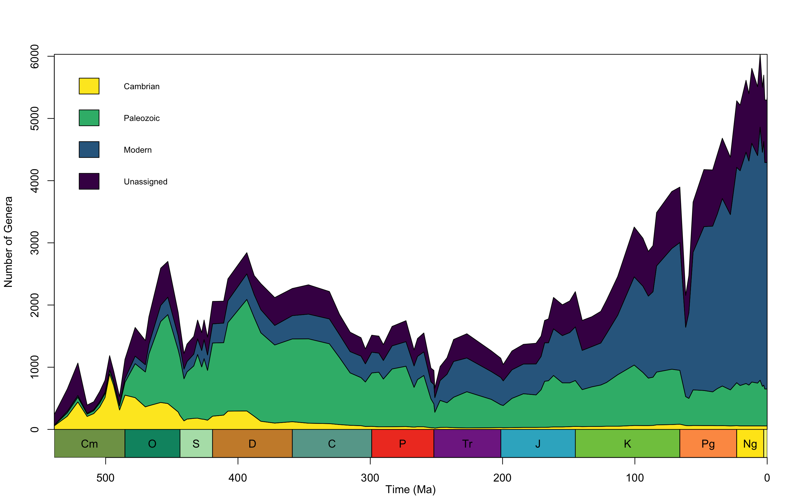
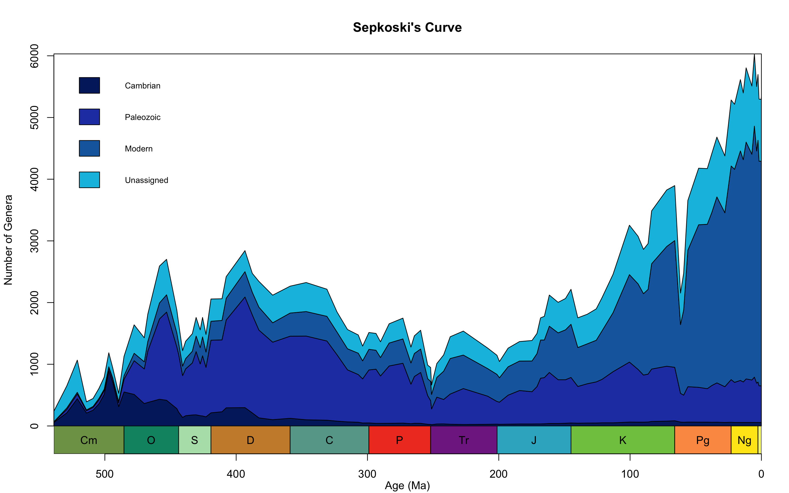
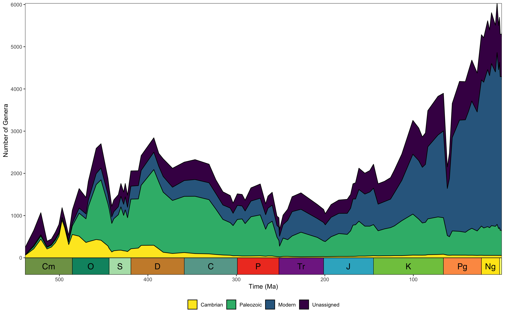
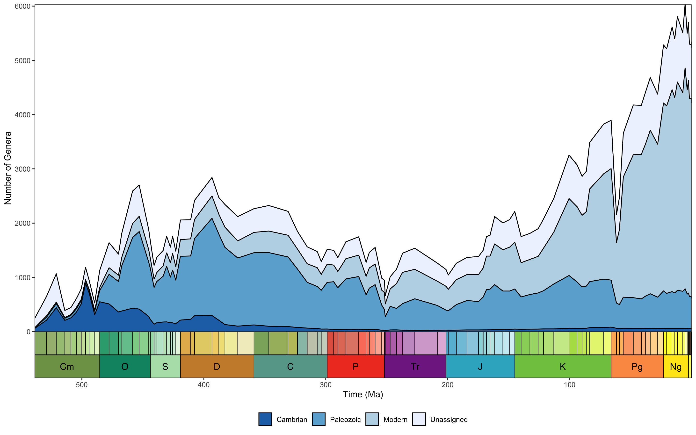

Overview
sepkoski is a data R package of Sepkoski’s fossil marine animal genera compendium (Sepkoski, 2002), ported from Shanan Peters’ online database.
The aim of sepkoski is to provide a light and easily-accessible solution to working with Sepkoski’s compendium to support teaching exercises. The package provides access to:
-
sepkoski_rawSepkoski’s raw fossil marine animal genera compendium (Sepkoski, 2002). -
sepkoskiSepkoski’s compendium with first and last appearance intervals updated to be consistent with stages from the International Geological Time Scale 2023. -
interval_tableA table linking intervals in Sepkoski’s compendium with the International Geological Time Scale 2023. - A function (
sepkoski_curve()) for plotting Sepkoski’s evolutionary fauna with ggplot for easy reproduction in presentations, articles, etc. - A function (
sepkoski_curve_base()) for plotting Sepkoski’s evolutionary fauna with base R for easy reproduction in presentations, articles, etc.
Note: In updating interval names, some interpretation was required. The interval_table dataset documents the linked interval names. If you notice any issue, or disagree with any of these assignments, please feel free to raise a GitHub issue, and I will do my best to address them as soon as possible.
Installation
The stable version of sepkoski can be installed via the CRAN using:
# Install stable version of the package
install.packages("sepkoski")The development version of sepkoski can be installed via GitHub using:
# Install development version of the package
devtools::install_github("LewisAJones/sepkoski")Usage
The datasets in sepkoski can be easily accessed via:
# Raw dataset
data("sepkoski_raw")
# Updated interval dataset
data("sepkoski")
# Interval table
data("interval_table")The only two functions in the sepkoski package at this time are sepkoski_curve() and sepkoski_curve_base(). These can be used to plot–with base R or ggplot2–Sepkoski’s evolutionary fauna (Sepkoski, 1981) using the Sepkoski (2002) fossil marine animal genera compendium. Users may provide their own values to function arguments or add layers to customise the appearance, or simply use the default arguments:
Base R
 Default Phanerozoic plot of Sepkoski’s three great evolutionary fauna. Number of genera are counted per international geological stage bin.
sepkoski_curve_base(plot_args = list(main = "Sepkoski's Curve",
xlab = "Age (Ma)",
col = c("#03256c",
"#2541b2",
"#1768ac",
"#06bee1"))) Custom Phanerozoic plot of Sepkoski’s three great evolutionary fauna. Number of genera are counted per international geological stage bin.
ggplot2
 Default Phanerozoic plot of Sepkoski’s three great evolutionary fauna. Number of genera are counted per international geological stage bin.
library(ggplot2)
library(deeptime)
sepkoski_curve() +
scale_fill_brewer() +
coord_geo(
pos = as.list(rep("bottom", 2)),
dat = list("stages", "periods"),
height = list(unit(2, "lines"), unit(2, "line")),
size = list(4, 4),
lab = list(FALSE, TRUE)) Custom Phanerozoic plot of Sepkoski’s three great evolutionary fauna. Number of genera are counted per international geological stage bin.
References
Sepkoski, J. J. (1981). A factor analytic description of the Phanerozoic marine fossil record. Paleobiology, 7(1), pp. 36-53.
Sepkoski, J. J. (2002). A compendium of fossil marine animal genera. Bulletins of American paleontology, 363, pp. 1-560.
Peters, S. (2022). Sepkoski’s Online Genus Database.